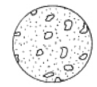
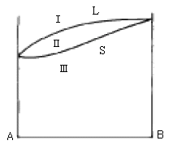
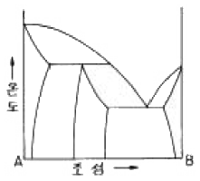
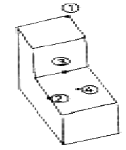
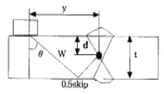

금속재료산업기사 (2005-03-20 기출문제)
1과목: 금속재료
1. 주조시 주형에 냉금을 넣어 주물표면을 급냉하여 경도를 증가시킨 내마모성 주철은?
- 구상흑연주철
- 칠드주철
- 가단주철
- 회주철
(정답률: 65%)

2. 금속내의 전위(dislocation)에 대한 설명으로 옳지 않은 것은?
- 전위밀도는 온도가 증가할 때 같이 증가한다.
- 선결함의 일종이다.
- 소성변형의 직접적인 원인이 된다.
- 전위는 여러 가지 형태가 생긴다.
(정답률: 61%)
3. 각종 섬유를 플라스틱에 개재하여 재질을 강화시켜 탄력성, 강도, 피로한도 등이 향상된 재료는?
- 중합금
- 초탄성합금
- ESD합금
- FRP합금
(정답률: 50%)
4. 산소나 인, 아연 등의 탈산제를 품지 않고 진공 또는 무산화 분위기에서 정련주조한 것이며 유리에 대한 봉착성이 좋고 수소취성이 없는 시판동은?
- 전기동
- 정련동
- 무산소동
- 조동
(정답률: 86%)
5. 내식성과 내충격성, 기계가공성이 우수한 18-8스테인리스강(stainless steel)의 화학적 성분으로 맞는 것은?
- 18% Cr, 8% Ni
- 18% Ni, 8% Co
- 18% W, 8% Mo
- 18% Mo, 8% P
(정답률: 82%)
6. 순 구리(Cu)에 대한 설명 중 틀린 것은?
- 전연성이 좋다.
- 전기 전도율이 좋다.
- 가공하기 쉽다.
- 연하지 않고 아주 단단하다.
(정답률: 83%)
7. 소성가공을 받은 금속을 재가열하는 경우 일어나는 성질 및 조직변화의 순서가 올바른 것은?
- 내부응력의 제거→결정입자 성장→연화→재결정
- 재결정→내부응력의 제거→연화→결정입자 성장
- 결정입자 성장→연화→재결정→내부응력의 제거
- 내부응력의 제거→연화→재결정→결정입자 성장
(정답률: 69%)
8. 분말합금 중에서 소결기계 부품에 대한 설명 중 옳지 않은 것은?
- 소결합금의 원료는 철분말이 주체이고, 환원분위기 중의 연속식 전기로에 넣고 소결한다.
- 소결체에 있어서는 성형압의 증가에 따라 밀도와 연신율이 감소한다.
- 원료분말제조→혼합→압축성형→예비소결→재압축→본소결의 공정을 거쳐 부품을 생산한다.
- 철-탄소계 소결강은 니켈, 크롬, 망간 등의 특수원소 분말을 배합하여 소결 특수강을 만들 수도 있다.
(정답률: 74%)
9. 주철에 대한 설명 중 옳지 않은 것은?
- 담금질 효과가 좋고 인성이 우수하다.
- 융점이 강에 비해 낮고 주조성이 우수하다.
- 주조성은 탄소량 함량에 따라 다르다.
- 주철중의 탄소는 흑연(유리탄소)과 화합탄소(Fe3C)로 존재한다.
(정답률: 32%)
10. 융점 420℃, 비중 7.1의 회백색금속으로 도금 및 다이캐스팅용에 많이 사용되는 금속은?
- Sn
- Al
- Zn
- Ni
(정답률: 79%)
11. 순철의 응고시 동소 변태인 A3변태에 대한 결정격자 구조 변화를 표시한 것 중 옳은 것은?(오류 신고가 접수된 문제입니다. 반드시 정답과 해설을 확인하시기 바랍니다.)
- 면심입방격자 → 체심입방격자
- 체심입방격자 → 면심정방격자
- 면심사방격자 → 체심사방격자
- 체심사방격자 → 면심사방격자
(정답률: 58%)
12. 다음 중 기계적 성질이 아닌 것은?
- 인장강도
- 단면수축율
- 연신율
- 열팽창계수
(정답률: 53%)
13. 구상흑연주철의 흑연구상화제로 가장 많이 사용되는 것은?
- Mg, Ca 계 합금
- P, Co 계 합금
- Cu, Pb 계 합금
- Mn, P 계 합금
(정답률: 69%)
14. 복합재료에 대한 설명 중 틀린 것은?
- 복합재료의 구성요소는 섬유, 입자, 층모재 등이 있다.
- 입자강화 복합재료는 보강재입자 형상이 구형 또는 각형으로 분말야금에 의해 제조된다.
- 복합재료화 함에 따라 강도, 강성도 등의 기계적성질을 향상시킬 수 있다.
- 스테인리스강판, 구리, 니켈 등의 금속판재를 입힌 클래딩(cladding) 구조물은 복합재료가 아니다.
(정답률: 79%)
15. 다음 그림과 같은 흑연의 형상을 나타내는 주철 조직은?

- 편상흑연
- 공정상흑연
- 국화상흑연
- 장미상흑연
(정답률: 70%)
16. 다음 설명 중 옳은 것은?
- 체심입방격자의 배위수는 8개이다.
- 면심입방격자의 충진율은 50%이다.
- 면심입방격자에 속하는 금속은 Mg, Zn, Fe, Be 등이다.
- 면심입방격자는 BCC이다.
(정답률: 75%)
17. 주석계 화이트 메탈에 대한 사항이 틀린 것은?
- Sn-Sb-Cu계 합금으로 Sb, Cu%가 높을수록 경도, 인장강도, 항압력이 증가한다.
- 이 합금의 불순물로는 Fe, Zn, Al, Bi, As 등이다.
- 마찰 계수가 높아 저속용으로 사용된다.
- 이 합금은 가격을 낮추기 위하여 Pb를 30%까지도 첨가하여 사용하기도 한다.
(정답률: 63%)
18. 냉간가공에서 가공도의 증가에 따라 강도, 경도가 증가되는 현상은?
- 시효경화
- 표면경화
- 고용경화
- 가공경화
(정답률: 72%)
19. 분말 소결법으로 제조한 초경합금 공구강은 TiC, WC, TiN 등 탄화물이나 질화물을 형성하여 절삭공구로 많이 사용된다. 이들이 갖추어야 할 구비조건에 해당 되지 않는 것은?
- 상온, 고온경도가 높아 내마모성이 클 것
- 인성이 커서 충격에 견딜 것
- 가공 및 열처리가 용이하고 열처리변형이 적을 것
- 피삭성(被削性)이 없을 것
(정답률: 69%)
20. 비정질 합금 특성으로 옳은 것은?
- 구조적으로 규칙성이 있다.
- 균질한 재료로 결정 이방성이 있다.
- 열에 약하며, 고온에서 결정화현상이 발생한다.
- 강도가 높고 연성이 양호하며, 가공경화 현상이 나타난다.
(정답률: 48%)
2과목: 금속조직
21. 금속의 결정구조에서 밀러지수(Miller's indices)에 대한 설명 중 옳지 않은 것은?
- 결정면이 한 축에 나란하면 원점에서 교점까지의 거리는 무한대이므로 밀러지수는 γ 이다.
- 결정축이 좌표축의 반대쪽에서 교행할 때는 그 지수는 (-)이고 수치 위에 바(bar)를 그어 표시한다.
- 밀러지수를 표시하는 방법으로 면일 경우는 ( ), 방향은〔 〕로 나타낸다.
- 밀러지수를 표시하는 방법으로 등가인 일군의 방향은 < >, 등가인 일군의 면은 { }로 나타낸다.
(정답률: 53%)
22. 용융금속의 응고과정에서 주형벽으로부터 나타나는 조직의 순서는？
- 칠드영역-주상정-등축정
- 주상정-등축정-칠드영역
- 등축정-칠드영역-주상정
- 등축정-주상정-칠드영역
(정답률: 62%)
23. 가공경화가 발생하는 가장 큰 요인은?
- 점결함의 증대
- 내부 취성의 증대
- 기공의 증대
- 전위밀도의 증대
(정답률: 67%)
24. 풀림쌍정(annealing twin)의 설명으로 옳지 않은 것은?
- 풀림에 의해서 생긴 쌍정이다.
- 일반적으로 규칙정연한 평형상의 결정학적 구조를 나타낸다.
- 결정립 성장과 병행해서 성장형성된다.
- BCC에서만 나타나고 HCP, FCC에서는 전혀 나타나지 않는다.
(정답률: 93%)
25. 코트렐(Cottrel) 효과란?
- 용질원자가 쌍정변형을 유발하는 효과
- 용질원자가 인상전위를 나사전위로 바꾸는 효과
- 용질원자에 의해 인상전위가 활성화하여 이동되기 쉽게 되는 효과
- 용질원자에 의해 인상전위가 안정상태가 되어 이동 되기 어렵게 되는 효과
(정답률: 43%)
26. 장범위규칙도 S= fA-XA / 1-XA 에서 fA의 설명으로 옳은 것은? (단, α격자는 A원자배열, β격자는 B원자배열임)
- α격자상의 일점을 B원자가 차지하는 확율
- β격자상의 일점을 A원자가 차지하는 확율
- α격자상의 일점을 A원자가 차지하는 확율
- β격자상의 일점을 A,B원자가 차지하는 확율
(정답률: 65%)
27. 그림과 같은 A, B 금속의 전율고용체 합금에서 영역(Ⅱ)에서의 응축계(condensed system)의 자유도는?

- 0
- 1
- 2
- 3
(정답률: 54%)
28. 다음에서 점결함이 아닌 것은?
- 공격자점
- 복공공
- 치환형 불순물원자
- 적층결함
(정답률: 74%)
29. Al - Cu합금의 석출과정에 대한 설명으로 옳지 않은 것은?
- 안전한 석출상을 만든다.
- 시효온도에서 장시간 유지할수록 점차 경도는 증가한다.
- 결정내에서 용질원자가 국부적으로 집합한다.
- 안정한 석출상이 되기 전의 중간상태를 만든다.
(정답률: 53%)
30. 일정한조건에서 만들어진 특정한 모양(예:코일형)을 소성 변형 시킨 후 가열하면 원래의 모양(코일형)으로 복귀하는 효과는?
- 코트렐효과
- 커켄덜효과
- 형상기억효과
- 바우싱거효과
(정답률: 75%)
31. 전율가용 고용체계에서, 액상선과 고상선이 어떤 조성에서 접하여 극소점을 갖는 상태도를 나타낼 때의 조성 합금은?
- 금속간 화합물
- 고용체
- 공정합금
- 저융점 합금
(정답률: 24%)
32. 금속간 화합물의 특징에 대한 설명으로 잘못된 것은?
- 각 성분의 특성이 없어진다.
- 전성은 거의 없다.
- 성분 금속보다 용융점이 낮다.
- 단단하고 취약하다.
(정답률: 72%)
33. A, B 양금속으로 된 합금의 경우 규칙격자를 만드는 일반적인 조성이 아닌 것은?
- AB형
- A2B형
- A3B형
- AB3형
(정답률: 72%)
34. 재료를 냉간 가공하면 전기저항이 대체로 증가하는 원인 중 가장 적합한 것은?
- 가공에 의해 본래의 조직이 조대화 되었으므로
- 압력에 의해 조직이 작아졌으므로 전류의 통과가 어려우므로
- 가공압력에 의한 자유전자의 압박 때문에
- 가공시 공격자점의 증가로 자유전자 이동을 방해 하므로
(정답률: 65%)
35. 새로운 상이 성장할 때의 계면 이동이 개개의 원자가 열적으로 활성화된 이동으로 일어나는 경우의 변태는?
- 확산형 변태
- 고속형 변태
- 무확산 변태
- 전단형 변태
(정답률: 89%)
36. 다음의 상태도를 잘못 설명한 것은?

- 공정반응을 가진다.
- 포정반응을 가진다.
- 중간상 분해형 상태도이다.
- 2상 공존영역이 7개 있다.
(정답률: 50%)
37. 금속의 결정구조를 알고자 할 때 가장 적합한 실험은？
- X-ray test
- creep test
- fatigue test
- impact test
(정답률: 59%)
38. 금속에 있어서 Fick의 확산 제2법칙의 식은? (단, D : 확산계수, t : 시간, x : 봉의 길이 방향, c : 농도)
- dc/dt=Dd2c/dx2
- dc/dt=Ddc2/dx2
- dc/dt=Dd2c/d2x
- dc/dt=Dd2c/d2x
(정답률: 80%)
39. 합금의 일반적인 성질에 대한 설명으로 옳지 않은 것은?
- 합금은 순금속보다 강도가 크다.
- 합금은 순금속보다 경도가 크다.
- 합금은 순금속보다 전기 전도율이 떨어진다.
- 합금은 순금속보다 용융점이 올라간다.
(정답률: 66%)
40. 체심입방격자에서 격자상수가 a일 때 원자반경은?
- (1 / √2)a
- (√3 / 2)a
- (√3 / 4)a
- (1 / √3)a
(정답률: 29%)
3과목: 금속열처리
41. 템퍼링(Tempering)균열의 원인이 될 수 없는 것은?
- 급속 가열 한다.
- 급랭 한다.
- 가열을 천천히 한다.
- Ms, Mf 점이 낮은 강재를 열처리 한다.
(정답률: 77%)
42. 소결재의 침황처리는 진한 암모니아수에 황화수소 가스를 포화한 혼합가스를 400∼700℃로 가열하여 소결재에 반응시켜 표면에 피막을 형성시킨다. 이때 표면에 어떤 피막이 형성되는가?
- 산화철 피막
- 탄화철 피막
- 질화철 피막
- 황화철 피막
(정답률: 44%)
43. 탄소공구강에 첨가되는 합금 원소가 열처리에 미치는 영향의 설명으로 옳지 못한 것은?
- 고온 강도 : W, Mo, V, Cr
- 내마멸성 : V, W, Mo, Cr
- 경화능 : Mn, Mo, Cr, Ni
- 인성 : S, Si, Al, Co
(정답률: 56%)
44. 철강의 변태를 설명한 것 중 틀린 것은?
- Ar' 변태는 오스테나이트가 투루스타이트로 변화하는 변태이고, Ar" 변태는 오스테나이트가 마텐자이트로 변화하는 변태이다.
- A0변태는 시멘타이트의 자기변태이고, A2변태는 철강의 자기변태이다.
- A1변태는 공석변태이고, 오스테나이트가 시멘타이트로 변화하는 변태이다.
- A3변태는 γ - Fe ⇆ α - Fe로 변화하는 변태이고, A4변태는 γ - Fe ⇆ δ - Fe로 변화하는 변태이다.
(정답률: 24%)
45. 그림과 같은 형상의 철강재료를 변태점 이상으로 가열한후 냉각하였을 때 냉각속도가 가장 빠른 곳은?

- ①
- ②
- ③
- ④
(정답률: 79%)
46. 표면 경화의 일종으로 소재를 (-)극에, 용착시킬 금속을 (+)극에 연결하고 전자적 진동에 의해 양극의 경화 금속을 음극의 소재 표면에 용착시켜 경화층을 얻는 것은?
- 금속 용사(Metallikon)
- 아크 육성(Arc-upgrowth)
- 수증기 처리(Homo treatment)
- 방전 경화법(Spark hardening)
(정답률: 60%)
47. 탄소공구강의 담금질 온도를 가능한 낮게하는 이유 중 관련이 가장 적은 것은?
- 온도가 높아지면 조직이 조대화하여 약하게 되므로
- 탈탄이 되기 쉬우므로
- 변형이 생기기 쉬우므로
- 잔류 오스테나이트량을 증가시키기 위하여
(정답률: 58%)
48. 열처리 후 경도 불균일 검출방법이 아닌 것은?
- 부식(50% 염산수용액)되면 흐림이 나온다.
- 경도를 측정한다.
- 간편한 방법으로 줄시험이 있고, 부드러운 부분은 줄이 걸린다.
- 연삭을 하면 연한부분은 경화부에 비하여 빛깔이 밝게 보인다.
(정답률: 38%)
49. 베벨기어를 퀜칭할 때 열처리 변형방지에 가장 적합한 냉각장치는?
- 분사 냉각장치
- 프레스 냉각장치
- 염욕 냉각장치
- 열유(120∼150℃) 냉각장치
(정답률: 50%)
50. 열처리로에 사용되는 열전대 중 0∼1400℃의 온도를 측정하는데 가장 적합한 것은?
- 백금- 로듐·합금
- 크로멜-알루멜
- 철-콘스탄탄
- 구리-콘스탄탄
(정답률: 65%)
51. 침탄온도 927℃로 6시간 침탄처리할 때 만들어지는 침탄층의 깊이(mm)는 약 얼마인가? (단, 온도에 따른 확산 정수의 값은 927℃=0.635이다.)
- 0.86
- 1.56
- 1.80
- 2.20
(정답률: 57%)
52. 강의 항온변태 곡선인 S곡선의 형태에 영향을 주는 요소가 아닌 것은?
- 가열 온도
- 합금 성분
- 오스테나이트 결정입도
- 항온 냉각 방법
(정답률: 27%)
53. 가단주철에 대한 설명으로 옳지 않은 것은?
- 열처리에 의해 주강과 같은 연성이 있는 강인한 성질을 갖는다.
- 반드시 백선주물이 원재료가 된다.
- 화학조성은 그다지 큰 관계가 없다.
- 흑심가단주철 열처리의 주목적은 흑연화이다.
(정답률: 61%)
54. Sub-zero 처리과정에서 균열의 발생에 대한 대책으로 적합한 것은?
- 담금질을 하기 전에 탈탄층을 두어 탈탄이 지속되도록 한다.
- 심랭처리 하기 전에 100∼300℃에서 Tempering 을 행한다.
- 심랭처리 온도로부터 승온은 가열로에서 한다.
- 담금질 후 즉시 Annealing을 한다.
(정답률: 79%)
55. 강의 표면 경화 방법이 아닌 것은?
- 침탄법
- 질화법
- 금속 침투법
- 조질처리
(정답률: 75%)
56. 고주파 표면 담금질의 특징이 아닌 것은?
- 담금질 경비절약
- 무공해 열처리
- 담금질 경화깊이 조절곤란
- 국부가열 가능
(정답률: 60%)
57. 황동제품의 시기균열(season crack)을 설명한 것 중 틀린 것은?
- 상온가공된 동합금이 외부에서 힘을 가하지 않아도 자연히 균열되는 현상을 말한다.
- 내부응력과 부식조건이 공존할 때 발생한다.
- 황동제 컵, 탄피, 전구소켓의 금속부분, 파이프 등에서 전혀 발생하지 않는다.
- 시기균열을 방지하기위해서는 300℃로 1시간 어닐링을 하며 냉각은 급냉이거나 서냉하여도 상관없다.
(정답률: 67%)
58. 가단주철의 분류방법으로 적당하지 않은 것은?
- 백심 가단주철
- 혼합 가단주철
- 흑심 가단주철
- 펄라이트 가단주철
(정답률: 62%)
59. 합금강에 첨가되었을 때 경화능 향상 효과가 가장 큰 것은 어떤 원소인가?
- P
- Ni
- Cu
- B
(정답률: 60%)
60. 다음 냉각장치 중 항온열처리에 적합한 냉각장치는?
- 염욕 냉각장치
- 프레스 냉각장치
- 분사 냉각장치
- 기름 냉각장치
(정답률: 50%)
4과목: 재료시험
61. 크리프 시험에서 변형이 증가되면서 경화 작용이 진행 되는 단계는?
- 제 1 단계
- 제 2 단계
- 제 3 단계
- 제 4 단계
(정답률: 43%)
62. 로크웰 경도시험에서 원추형 압입자 꼭지각의 각은 몇도를 나타내는가? (곡률반지름 : 0.2㎜)
- 100 도
- 120 도
- 136 도
- 180 도
(정답률: 72%)
63. 금속 용해 작업시 안전교육 내용으로 적합치 않은 것은?
- 재해시 응급조치 요령 교육
- 용금에 냉재를 넣지 않도록 교육
- 고온작업이기 때문에 안전장구를 벗고 작업하도록 교육
- 큐폴라 용해시 출탕구를 점토로 막도록 함
(정답률: 76%)
64. 현미경조직 검사시의 연마제로 잘못 연결된 것은?
- 비철 및 합금 : Al2O3, MgO
- 철강재 : Fe2O3, Cr2O3, Al2O3
- 초경합금 : 다이아몬드 페이스트
- 구리, 황동, 청동 : 염화제이철
(정답률: 50%)
65. 금속조직을 연구하기 위한 일반적인 방법은?
- 초음파시험
- 피로시험
- 형광시험
- 현미경시험
(정답률: 73%)
66. 경도를 측정하기 위한 방법으로 옳지 않은 것은?
- 압입에 의한 방법
- 긋기(스크래치)에 의한 방법
- 반발에 의한 방법
- 프레스 성형에 의한 방법
(정답률: 64%)
67. 초음파 탐상법에서는 어떤 주파수범위의 초음파를 사용하는가?
- 1 Hz 미만
- 5-10 kHz
- 1-5 MHz
- 10-15 kHz
(정답률: 43%)
68. 영구히 재료가 파괴되지 않는 최대의 응력을 무엇이라고 하는가?
- 탄성한도
- 피로한도
- 크리프한도
- 비례한도
(정답률: 60%)
69. 두께가 t(mm)인 철판을 직경이 d(mm)인 원형의 펀치로 전단하여 관통시킬 때 전단응력(τ)을 계산하는 식으로 맞는 것은? (단, P=전단하중, A=전단면적)
- τ = P/(πt)
- τ = P/(2A)
- τ = P/(dt)
- τ = P/(πdt)
(정답률: 78%)
70. 인장시험편에서 물림부는 무엇을 뜻하는가?
- 시험기의 물림장치에 물려지는 부분
- 시험편의 중앙에서 동일 단면의 부분
- 평행부에 응력을 균일하게 분산시키는 부분
- 평행부에 찍어놓은 기준점
(정답률: 74%)
71. 미소경도 시험법의 설명 중 옳지 않은 것은?
- 시험편이 크고 두꺼우며, 경도가 낮은 부분 측정
- 표면의 경도 측정
- 금속재료의 조직 경도 측정
- 치과용 공구의 경도 측정
(정답률: 48%)
72. 전자현미경실에서 기기의 상태를 좋은 상태로 유지하기 위한 조치가 아닌 것은?
- 항온 유지
- 항습 유지
- 소음과 진동 유지
- 분진방지
(정답률: 72%)
73. 마모시험의 방법이 아닌 것은?
- 슬라이딩 마모
- 회전마모
- 왕복 슬라이딩마모
- 편마모
(정답률: 56%)
74. 육안적 검사법으로만 묶인 것은?
- 산세, 파면검사, 전해법
- 해수시험, 도금법, 분사법
- 가압검사, 유중침지, 자기검사
- 자기검사, 타진법, 성분분석
(정답률: 38%)
75. 인장시험기에 있어서 인장시험의 조건이 아닌 것은?
- 규정치에 대응하는 하중의 절반하중까지는 적당한 속도로 시험한다.
- 인장강도의 규정치에 상응하는 하중의 1/2까지는 적당한 속도로 하중을 가한다.
- 강에 있어서 하중의 1/2이상에서는 시험편 평행부의 신연증가율이 20∼80%/min되는 속도로 인장시험한다.
- 일반적인 시험온도는 60∼90℃의 범위가 적당하다.
(정답률: 62%)
76. 침투탐상 시험에서 재질은 알루미늄강의 용접부의 쇳물 경계, 융합 불량, 빈틈새, 갈라짐 등을 측정시 침투시간과 현상시간 모두 걸리는데 대략 몇분 정도 소요되는가?
- 10분 ~ 20분
- 40분 ~ 60분
- 80분 ~ 110분
- 120분 ~ 140분
(정답률: 58%)
77. 다음 중 강성계수 G를 측정하는 시험법은?
- 마모시험
- 피로시험
- 크리프시험
- 비틀림시험
(정답률: 75%)
78. 다음 중 주조품에 나타나는 결함이 아닌 것은?
- 기공(Blow hole)
- 균열(Crack)
- 탕회불량(Misrun)
- 언더컷(Under cut)
(정답률: 49%)
79. 불꽃시험에 있어서 불꽃의 수가 가장 많은 강은?
- 0.1% 탄소강
- 0.3% 탄소강
- 0.8% 탄소강
- 크롬강
(정답률: 50%)
80. 초음파를 이용한 강재의 용접부 결함 탐상을 다음 그림과 같이 시험하였을 때 강재표면으로 부터 결함까지의 깊이 d는? (단, 시편의 두께 t = 30mm, 초음파 빔의 거리 W = 64mm, 초음파 빔의 굴절각 θ = 45°이며(cos45° = 0.7071), y는 탐촉자의 초음파 입사점으로부터 결함까지의 거리이다.)

- d ≒ 12.87 mm
- d ≒ 15.22 mm
- d ≒ 14.75 mm
- d ≒ 45.25 mm
(정답률: 32%)